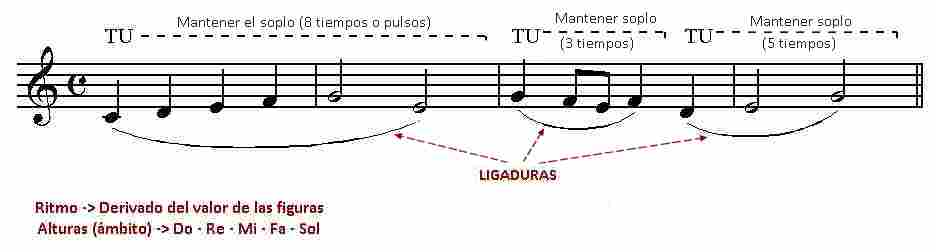
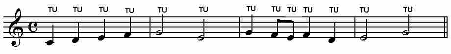
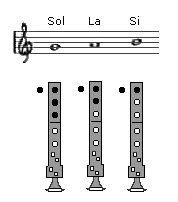
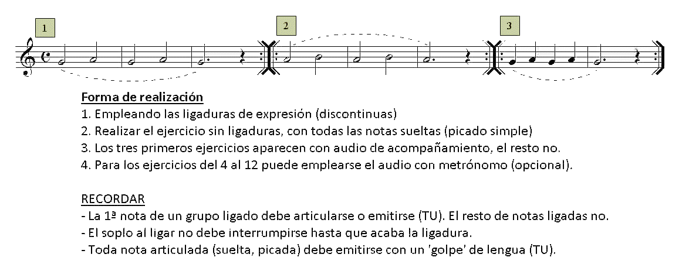
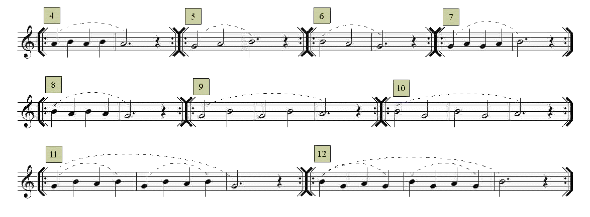
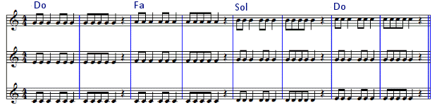
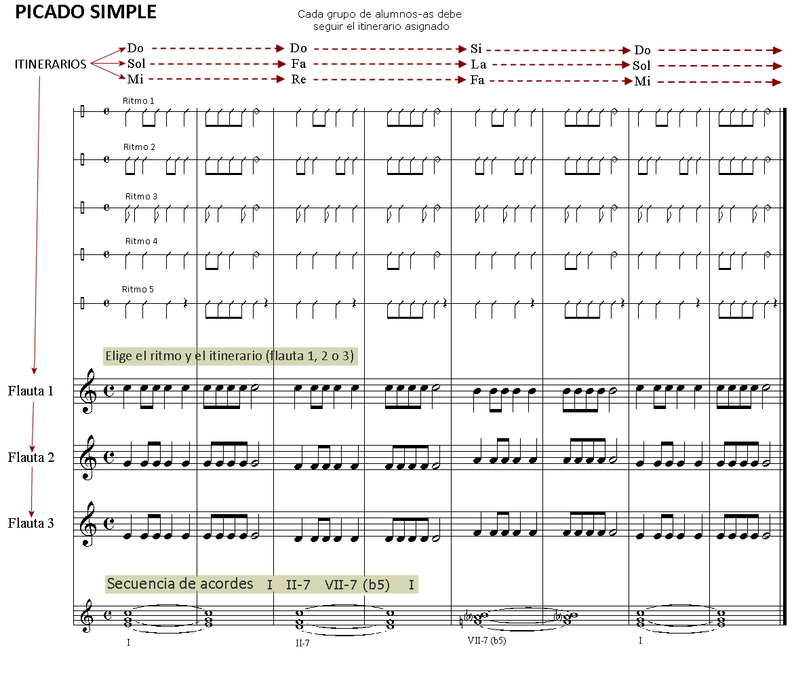
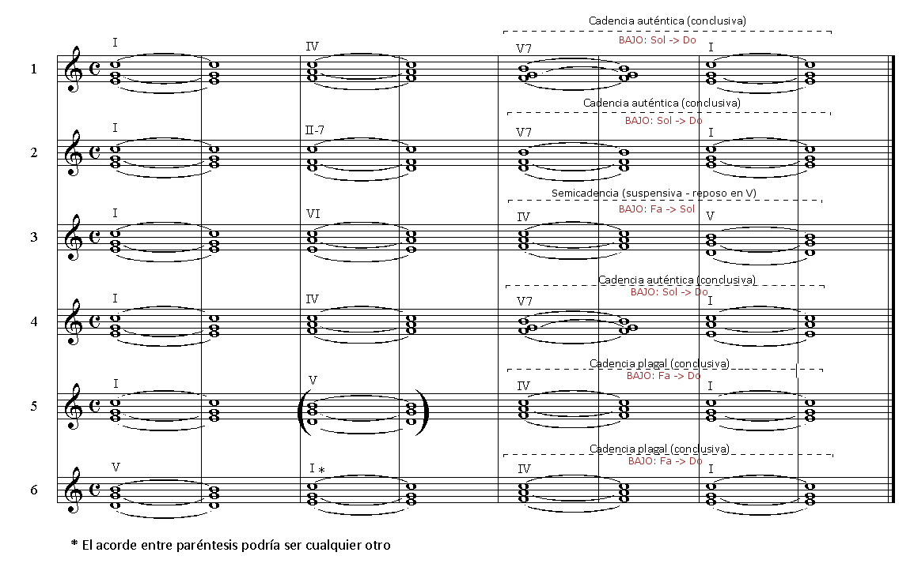
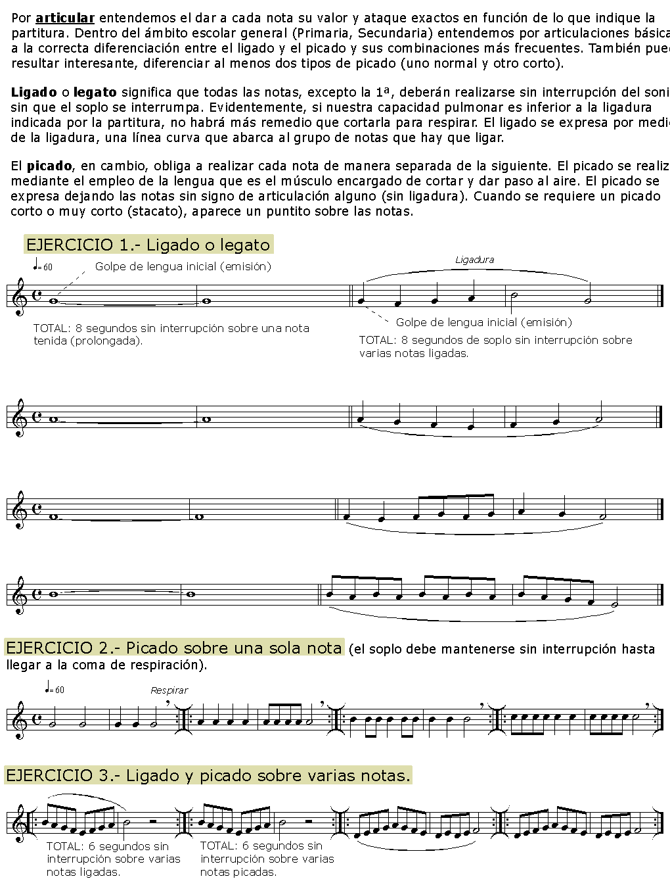

Lección 3.- "Articulaciones básicas: ligado y picado simple"
Existen varios tipos de articulación del sonido en los instrumentos de viento. En este curso solo estudiaremos los dos más básicos y que considero imprescindibles para un aprendizaje básico correcto: ligado ("legato") y picado o picado simple.
El "legato" o ligado consiste en interpretar dos o más notas seguidas con el mismo soplo o columna de aire, o sea, sin que haya interrupciones entre ellas. Las notas ligadas aparecen en partitura sobre o bajo una línea curva (ligadura de expresión). En toda ligadura hay que tener en cuenta tres factores:
El soplo o columna de aire que viene determinado por la suma de los valores de las notas ligadas. Debe iniciarse con la emisión del sonido a través del movimiento o 'golpe' de lengua (TU).
El ritmo (valores de las figuras).
La altura (notas).

COMENTARIO La primera ligadura deberá iniciarse con la sílaba 'TU' (golpe de lengua para emitir) y prolongar el soplo o columna de aire durante ocho tiempos o pulsos (4 negras + 2 blancas) de manera ininterrumpida mientras los dedos evolucionan según el ritmo y altura de las notas. Lo segunda y tercera ligaduras funcionarán de la misma manera.
El picado se interpreta articulando o emitiendo cada una de las notas con la sílaba TU. Las notas deben "picarse" siempre que no aparezcan ligadas. Una vez picadas o articuladas hay que darles el valor rítmico que cada una tiene (blanca, negra, etc.).

EJERCICIOS
Realiza los ejercicios siguientes empleando el ligado opcional (ligaduras discontinuas) y/o el picado simple. Para ello emplearemos las tres notas que ya conocemos: Sol - La - Si. Recuerda que la primera nota de un grupo ligado debe articularse (golpe de lengua que permite el paso del aire -> TU). El resto de notas ligadas no, por lo tanto habrá que seguir enviando aire y moviendo los dedos a la posición de la nota que corresponda. La última nota de las ligadas debe acabar interrumpiendo con la lengua el paso del aire. Este procedimiento que en principio parece complejo, con la práctica se hace automático y resulta imprescindible para el control de los sonidos largos y de los grupos de notas ligadas.


Audio de acompañamiento para los ejercicios 1, 2 y 3

Metrónomo opcional para los ejercicios 4 al 12 (90 p/m)
Armonización y edición audios: R.Páez Perza
ACTIVIDADES DE AMPLIACIÓN (opcionales)
Nota.- Dado que estos ejercicios y actividades emplean notas que todavía no se han practicado, parece conveniente realizarlos después de haber completado la lección 6. No obstante, sí pueden practicarse los ejercicios que empleen las notas Sol, La, Si.
Actividades de ampliación 1

OBJETIVOS
- Practicar el picado simple. Realizar monódicamente: primero el pentagrama inferior, luego el central y finalmente el superior.
- Realizar polifónicamente de manera simultánea, agrupando los alumnos-as de tres en tres (trío) o bien dividiendo el grupo clase en tres subgrupos.
- Coordinarse con el audio (tempo).
Actividades de ampliación 2 Se trata de realizar uno de los tres itinerarios (los tres si se realiza en grupo) aplicando el picado simple según el diseño rítmico y la secuencia armónica elegida. En principio hay que realizar el ejercicio que se propone según se indica en la primera imagen, donde la secuencia de acordes es siempre la misma (Do - Fa - Sol - Do). En cambio, el diseño rítmico a aplicar puede elegirse de entre los cinco propuestos. En la segunda imagen aparecen diferentes secuencias armónicas sobre las que aplicar el diseño rítmico elegido.

FORMA DE REALIZACIÓN
Dividir la clase en tres grupos de alumnos de manera que:
- A la voz o parte inferior (flauta 3) le corresponda el 50% de los alumnos-as.
- A parte intermedia (flauta 2) el 30 - 35% de alumnos-as.
- A la parte superior (flauta 1) el 15 - 20% de los alumnos-as. De esta manera compensaremos el aumento de intensidad que se produce de manera natural conforme ascendemos hacia el registro agudo y que descompensaría los grupos si se forman con el mismo número de integrantes.
Aplicar uno de los diseños rítmicos (hay 5, pero pueden crearse otros) a todas las partes (flauta 1, 2 y 3).
He aquí otras opciones armónicas sobre las que aplicar los diferentes diseños rítmicos:

OBJETIVOS
- Practicar el picado simple.
- Experimentar la realización polifónica (secuencias de acordes -conclusivas y/o suspensivas-) en grupo.
- Acostumbrarse a seguir el pulso en actividades grupales.
Actividades de ampliación 3

Audición
Escucha atentamente el audio del siguiente vídeo y trata de reconocer los dos tipos de articulación que hemos aprendido en esta lección.
Concerto en Fa mayor (Allegro) de G. Sammartini interpretado por Lenka Molcanyiova

La enseñanza aprendizaje de la flauta escolar por Rafaél Páez Perza bajo licencia Creative Commons Reconocimiento-NoComercial-CompartirIgual 4.0 Internacional License.